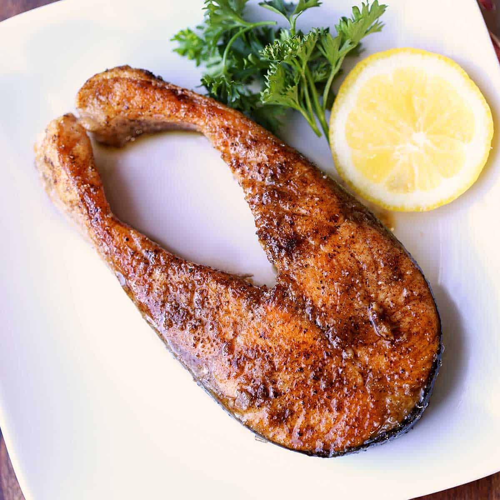
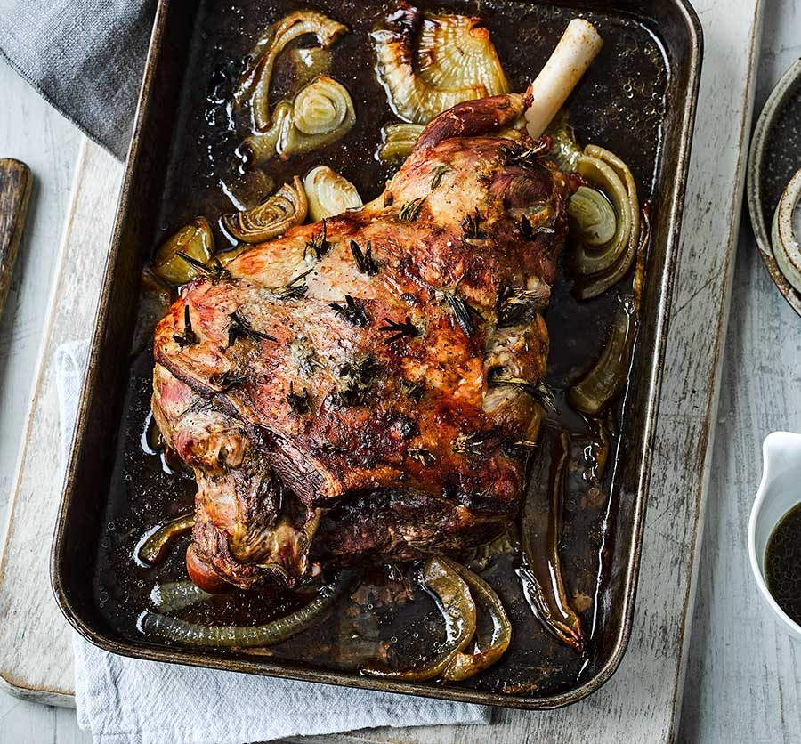

Check out our menu!
Spaghetti

One morning, whene morning, when Gregor Samsa woke from troubled dreams, he found himself transformed in his bed into a horrible vermin. He lay on his armour-like back, and if he lifted his head a little he could see his brown belly, slightly domed and divided by arches into stiff sections. The bedding was hardly able to cover it and seemed ready to slide off any moment. His many legs, pitifully thin compared with the size of the rest of him, waved about helplessly as he looked. "What's happened to me?" he thought. It wasn't a dream. His room, a proper human room although a little too small, lay peacefully between its four familiar walls. Gregor Samsa woke from troubled dreams, he found himself transformed in his bed into a horrible vermin. He lay on his armour-like back, and if he lifted his head a little he could see his brown belly, slightly domed and divided by arches into stiff sections. The bedding was hardly able to cover it and seemed ready to slide off any moment. His many legs, pitifully thin compared with the size of the rest of him, waved about helplessly as he looked. "What's happened to me?" he thought. It wasn't a dream. His room, a proper human room although a little too small, lay peacefully between its four familiar walls. A collection of textile samples lay spread out on the table - Samsa was a travelling salesman - and above it there hung a picture that he had recently cut out of an illustrated magazine and housed in a nice, gilded frame. It showed a lady fitted out with a fur hat and fur boa who sat upright, raising a heavy fur muff that covered the whole of her lower arm towards the viewer. Gregor then turned to look out the window at the dull weather. Drops of rain could be heard hitting the pane, which made him feel quite sad. "How about if I sleep a little bit longer and forget all this nonsense", he thought, but that was something he was unable to do because he was used to sleeping on his right, and in his present state couldn't get into that position. However hard he threw himself onto his right, he always rolled back to where he was. He must have tried it a hundred times, shut his eyes so that he wouldn't have to look at the floundering legs, and only stopped when
Salmon Steak
One morning, we morning, when Gregor Samsa woke from troubled dreams, he found himself transformed in his bed into a horrible vermin. He lay on his armour-like back, and if he lifted his head a little he could see his brown belly, slightly domed and divided by arches into stiff sections. The bedding was hardly able to cover it and seemed ready to slide off any moment. His many legs, pitifully thin compared with the size of the rest of him, waved about helplessly as he looked. "What's happened to me?" he thought. It wasn't a dream. His room, a proper human room although a little too small, lay peacefully between its four familiar walls. hen Gregor Samsa woke from troubled dreams, he found himself transformed in his bed into a horrible vermin. He lay on his armour-like back, and if he lifted his head a little he could see his brown belly, slightly domed and divided by arches into stiff sections. The bedding was hardly able to cover it and seemed ready to slide off any moment. His many legs, pitifully thin compared with the size of the rest of him, waved about helplessly as he looked. "What's happened to me?" he thought. It wasn't a dream. His room, a proper human room although a little too small, lay peacefully between its four familiar walls. A collection of textile samples lay spread out on the table - Samsa was a travelling salesman - and above it there hung a picture that he had recently cut out of an illustrated magazine and housed in a nice, gilded frame. It showed a lady fitted out with a fur hat and fur boa who sat upright, raising a heavy fur muff that covered the whole of her lower arm towards the viewer. Gregor then turned to look out the window at the dull weather. Drops of rain could be heard hitting the pane, which made him feel quite sad. "How about if I sleep a little bit longer and forget all this nonsense", he thought, but that was something he was unable to do because he was used to sleeping on his right, and in his present state couldn't get into that position. However hard he threw himself onto his right, he always rolled back to where he was. He must have tried it a hundred times, shut his eyes so that he wouldn't have to look at the floundering legs, and only stopped when
Cheese Pizza
e morning, when Gregor Samsa woke from troubled dreams, he found himself transformed in his bed into a horrible vermin. He lay on his armour-like back, and if he lifted his head a little he could see his brown belly, slightly domed and divided by arches into stiff sections. The bedding was hardly able to cover it and seemed ready to slide off any moment. His many legs, pitifully thin compared with the size of the rest of him, waved about helplessly as he looked. "What's happened to me?" he thought. It wasn't a dream. His room, a proper human room although a little too small, lay peacefully between its four familiar walls. One morning, when Gregor Samsa woke from troubled dreams, he found himself transformed in his bed into a horrible vermin. He lay on his armour-like back, and if he lifted his head a little he could see his brown belly, slightly domed and divided by arches into stiff sections. The bedding was hardly able to cover it and seemed ready to slide off any moment. His many legs, pitifully thin compared with the size of the rest of him, waved about helplessly as he looked. "What's happened to me?" he thought. It wasn't a dream. His room, a proper human room although a little too small, lay peacefully between its four familiar walls. A collection of textile samples lay spread out on the table - Samsa was a travelling salesman - and above it there hung a picture that he had recently cut out of an illustrated magazine and housed in a nice, gilded frame. It showed a lady fitted out with a fur hat and fur boa who sat upright, raising a heavy fur muff that covered the whole of her lower arm towards the viewer. Gregor then turned to look out the window at the dull weather. Drops of rain could be heard hitting the pane, which made him feel quite sad. "How about if I sleep a little bit longer and forget all this nonsense", he thought, but that was something he was unable to do because he was used to sleeping on his right, and in his present state couldn't get into that position. However hard he threw himself onto his right, he always rolled back to where he was. He must have tried it a hundred times, shut his eyes so that he wouldn't have to look at the floundering legs, and only stopped when
Lamb Leg
One moe morning, when Gregor Samsa woke from troubled dreams, he found himself transformed in his bed into a horrible vermin. He lay on his armour-like back, and if he lifted his head a little he could see his brown belly, slightly domed and divided by arches into stiff sections. The bedding was hardly able to cover it and seemed ready to slide off any moment. His many legs, pitifully thin compared with the size of the rest of him, waved about helplessly as he looked. "What's happened to me?" he thought. It wasn't a dream. His room, a proper human room although a little too small, lay peacefully between its four familiar walls. rning, when Gregor Samsa woke from troubled dreams, he found himself transformed in his bed into a horrible vermin. He lay on his armour-like back, and if he lifted his head a little he could see his brown belly, slightly domed and divided by arches into stiff sections. The bedding was hardly able to cover it and seemed ready to slide off any moment. His many legs, pitifully thin compared with the size of the rest of him, waved about helplessly as he looked. "What's happened to me?" he thought. It wasn't a dream. His room, a proper human room although a little too small, lay peacefully between its four familiar walls. A collection of textile samples lay spread out on the table - Samsa was a travelling salesman - and above it there hung a picture that he had recently cut out of an illustrated magazine and housed in a nice, gilded frame. It showed a lady fitted out with a fur hat and fur boa who sat upright, raising a heavy fur muff that covered the whole of her lower arm towards the viewer. Gregor then turned to look out the window at the dull weather. Drops of rain could be heard hitting the pane, which made him feel quite sad. "How about if I sleep a little bit longer and forget all this nonsense", he thought, but that was something he was unable to do because he was used to sleeping on his right, and in his present state couldn't get into that position. However hard he threw himself onto his right, he always rolled back to where he was. He must have tried it a hundred times, shut his eyes so that he wouldn't have to look at the floundering legs, and only stopped when
Salard
One mornine morning, when Gregor Samsa woke from troubled dreams, he found himself transformed in his bed into a horrible vermin. He lay on his armour-like back, and if he lifted his head a little he could see his brown belly, slightly domed and divided by arches into stiff sections. The bedding was hardly able to cover it and seemed ready to slide off any moment. His many legs, pitifully thin compared with the size of the rest of him, waved about helplessly as he looked. "What's happened to me?" he thought. It wasn't a dream. His room, a proper human room although a little too small, lay peacefully between its four familiar walls. g, when Gregor Samsa woke from troubled dreams, he found himself transformed in his bed into a horrible vermin. He lay on his armour-like back, and if he lifted his head a little he could see his brown belly, slightly domed and divided by arches into stiff sections. The bedding was hardly able to cover it and seemed ready to slide off any moment. His many legs, pitifully thin compared with the size of the rest of him, waved about helplessly as he looked. "What's happened to me?" he thought. It wasn't a dream. His room, a proper human room although a little too small, lay peacefully between its four familiar walls. A collection of textile samples lay spread out on the table - Samsa was a travelling salesman - and above it there hung a picture that he had recently cut out of an illustrated magazine and housed in a nice, gilded frame. It showed a lady fitted out with a fur hat and fur boa who sat upright, raising a heavy fur muff that covered the whole of her lower arm towards the viewer. Gregor then turned to look out the window at the dull weather. Drops of rain could be heard hitting the pane, which made him feel quite sad. "How about if I sleep a little bit longer and forget all this nonsense", he thought, but that was something he was unable to do because he was used to sleeping on his right, and in his present state couldn't get into that position. However hard he threw himself onto his right, he always rolled back to where he was. He must have tried it a hundred times, shut his eyes so that he wouldn't have to look at the floundering legs, and only stopped when